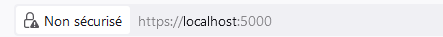
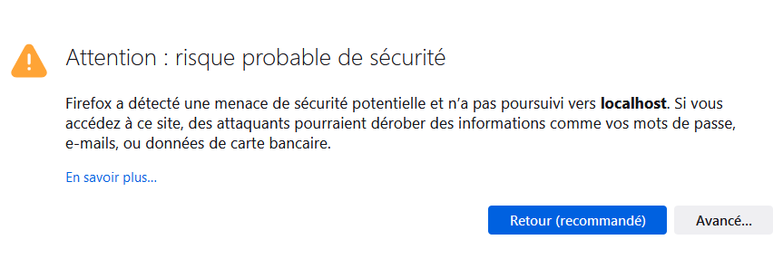

TP : Protocole HTTPS et Certificat#
Attaque dite « Homme du milieu »#
Bien que les communications soient chiffrées, rien ne garantit que l’on communique avec la bonne personne ou le bon site.
On suppose qu’Alice et Bob veulent échanger de façon sécurisée. Carlo réussit à intercepter les messages envoyés entre Alice et Bob. On note \(a\), \(b\) et \(c\) les clés privées de chacun et \(A\), \(B\) et \(C\) leurs clés publiques.
Est-il possible pour Carlo de récupérer les clés publiques A et B de Bob et Alice ?
Alice envoie un message chiffré à Bob. Est-il possible pour Carlo de le déchiffrer ? Pourquoi ?
On donne la figure suivante qui illustre l’attaque dite « homme du milieu ».

Décrivez les 4 étapes qui vont permettre à Carlo de déchiffrer les messages que Bob et Alice s’échangent.
Certificat#
Un certificat est un fichier qui permet d’assurer de son identité. Les certificats sont créés par des autorités reconnus par les différents acteurs du numérique. La navigation sur le web est sécurisée grâce aux certificats.
Connectez-vous au site de l’agence nationale de la sécurité des systèmes d’informations ANSSI.
Sur la page d’accueil du site, vérifier la présence du cadenas et cliquer dessus pour afficher le certificat.
Repérer les informations suivantes:
L’algorithme de chiffrement utilisé pour créer le certificat.
La taille de la clé publique.
L’autorité qui a émis ce certificat.
Les noms de domaines concernés par ce certificat.
Retrouver les mêmes informations en ligne de commande avec openssl.
openssl s_client -connect url_du_site:443
Protocole https#
Le protocole HTTPS est l’association du protocole HTTP et du PROTOCOLE SSL/TLS.
Le protocole HTTP assure l’acheminement des données entre un client et un serveur. Cette transmission de données est basée sur des requêtes selon les méthodes GET ou POST.
Le protocole TLS assure le chiffrement des données pour qu’elles ne soient pas lisibles et l’échange de certificats pour s’assurer de la bonne identité du client et du serveur.
Il est possible de mettre en place sur une même machine un serveur WEB et un client pour observer les requêtes du protocole HTTP et même du protocole HTTPS.
Travail préparatoire
Dans Thonny, vous devez vous assurer de la présence du module
flaskqui permet de créer un serveur WEB et du modulepyopensslqui se charge du chiffrement et des certificats du protocole TLS.Créer un dossier de travail
protocolecontenant les dossierstemplatesetstatic.
Premier serveur web
Créer un fichier Python
serveur.pycontenant le code suivant:1from flask import Flask, render_template 2 3# Création de l'objet Flask (serveur web) 4app = Flask(__name__) 5 6# On définit une route qui renvoie la page index.html 7@app.route("/") 8def accueil(): 9 return "C'est un serveur web !" 10 11# Lancement du serveur 12if __name__ == '__main__': 13 app.run(debug=True)
Exécuter le fichier
serveur.pypuis ouvrez l’urlhttp://localhost:5000/dans un navigateur.
Ajouter un fichier HTML
Créer, dans le dossier
templates, une page WEBindex.htmlcontenant un titre de niveau 1 etun petit paragraphe.Modifier la ligne 9 du fichier Python
serveur.pypar la ligne suivante:return render_template("index.html")
Protocole TLS
Le module Flask prend en charge des certificats créés à la volée pour créer rapidement une connexion HTTPS.
Ajouter en dernière ligne le paramètre
ssl_context='adhoc'pour ajouter un protocole TLS au protocole HTTP:app.run(ssl_context='adhoc', debug=True)
Relancez votre serveur si nécessaire et actualiser votre page WEB. Attention, on a changé de protocole. Si tout se passe normalement, vous obtenez :
 Cliquez sur le bouton
Avancé...puis sur le boutonAccepter le risque et poursuivre.Afficher et identifier votre certificat en donnant le nom du sujet, la validité et l’algorithme de chiffrement.
{kind=link}
Ajouter son certificat
Lorsqu’on développe un serveur WEB, il est nécessaire d’avoir son propre certificat. On doit en faire la demande auprès d’une autorité de certification. Comment faire pour créer un certificat et faire des tests ? On crée un certificat dit auto-signé avec openssl.
Avec
openssl, créer une paire de clefs privée et publique (attention au chemin du dossier):openssl genrsa -out key.pem 4096
Avec la paire de clefs créée, créer un certificat en utilisant la commande suivante:
openssl req -new -x509 -days 365 -key key.pem -out cert.pem
Actualiser le navigateur et vérifier que le certificat utilisé est bien celui créé précédemment.